This A17 special chapter is a collection-first draft. The current goal is to gather old-exam stems and choices into one usable chapter before full answer verification and teaching-note expansion.
Q1. A 54-year-old male with a history of cirrhosis and esophageal varices presents with massive hematemesis, hypotension (BP 80/50 mmHg), and tachycardia (HR 130 bpm). Despite aggressive resuscitation, he continues to bleed. A Sengstaken-Blakemore tube is inserted. What is the most immediate next step after inflation of the gastric balloon?
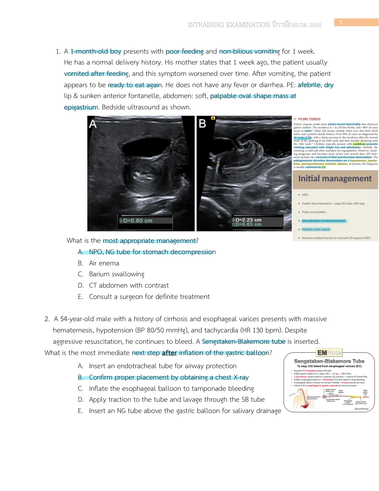
Intraining exam 100 ข้อ 12 Jan 2026, p.2
Source file: Intraining exam 100 ข้อ 12 Jan 2026 | Intraining source-preserving stem/options. No official answer key was found in the PDF; keep unanswered until verified. | Review flags: missing_verified_answer_key
Q2. A 6-year-old boy was brought to the ED with dyspnea. He was diagnosed with asthma for 1 year and had good compliance with the treatment. He got a cold for 2 days, felt difficult to breathe this morning. Salbutamol MDI was delivered 8 puffs/dose for 2 doses before arrival. His vital signs were revealed, T 37.8 °C, RR 28/min, HR 120/min, BP 110/70, SpO2 94%. Wheezing was heard from both lungs in the expiratory phase, with suprasternal retraction was noted. Which of the following is true?
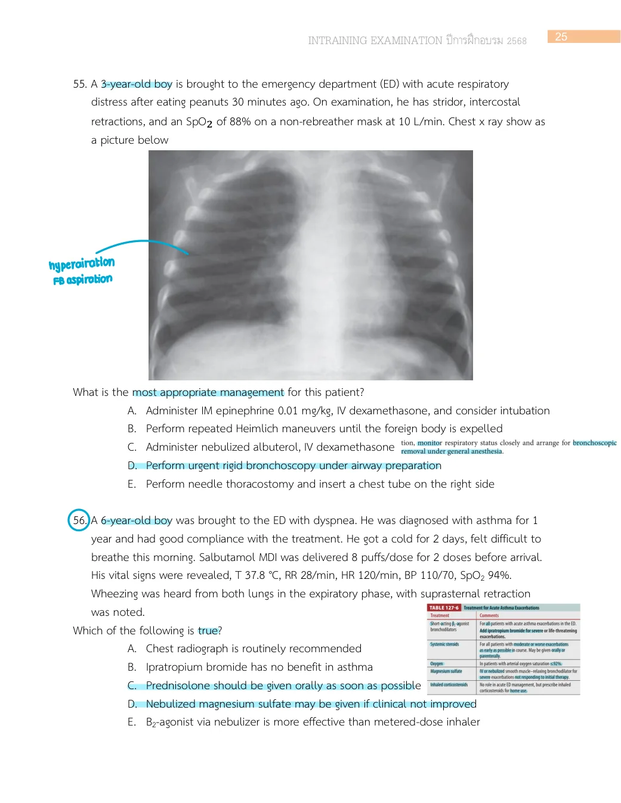
Intraining exam 100 ข้อ 12 Jan 2026, p.26
Source file: Intraining exam 100 ข้อ 12 Jan 2026 | Intraining source-preserving stem/options. No official answer key was found in the PDF; keep unanswered until verified. | Review flags: missing_verified_answer_key
Q3. A 28-year-old woman, G2P1 GA 34 weeks, is brought to the emergency department by EMS after a motor vehicle collision. Paramedics administered 1 L of isotonic fluids en route. She reports severe, continuous abdominal pain and notes a decrease in fetal movements. On examination, her blood pressure is 100/70 mmHg, heart rate of 120 beats per minute, and respiratory rate of 26 breaths per minute. Her abdomen is tense with uterine tenderness, and there is moderate vaginal bleeding. Fetal heart monitoring is shown below. Which of the following is most appropriate next step in management of this patient?
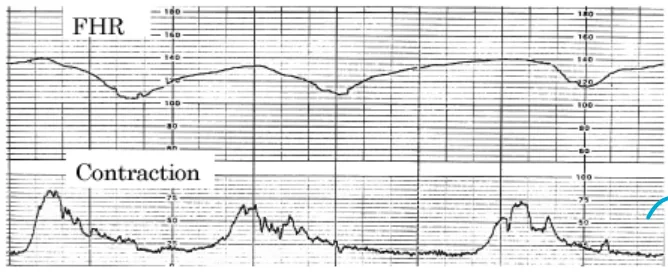
Intraining 2569 Q77 source image
Source file: Intraining exam 100 ข้อ 12 Jan 2026 | Intraining source-preserving stem/options. No official answer key was found in the PDF; keep unanswered until verified. | Review flags: missing_verified_answer_key
Q4. A 25-year-old male presents to the emergency department with a stab wound to the left upper quadrant of the abdomen. He is conscious and alert, with a blood pressure of 110/70 mmHg, heart rate of 95 beats per minute, and respiratory rate of 18 breaths per minute. Physical examination reveals a 2 cm laceration located 3 cm below the left costal margin in the midclavicular line. The abdomen is soft with mild tenderness around the wound site, and there is no evidence of peritonitis. Which of the following is the most appropriate next step in management of this patient?
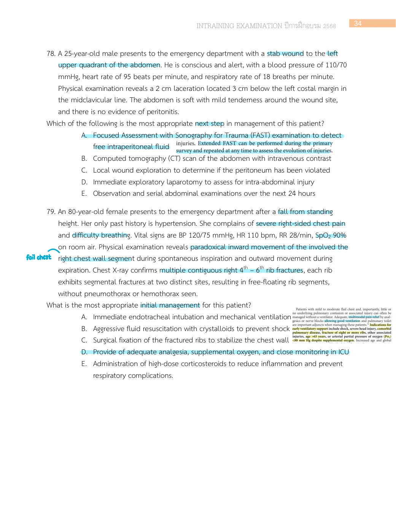
Intraining exam 100 ข้อ 12 Jan 2026, p.35
Source file: Intraining exam 100 ข้อ 12 Jan 2026 | Intraining source-preserving stem/options. No official answer key was found in the PDF; keep unanswered until verified. | Review flags: missing_verified_answer_key
Q5. Male 20 years old, no underlying disease, motorcycle accident. Airway patent, RR 22/min, O2 saturation 95% room air, BP 60/30 mmHg. After 2 L fluid, BP is 70/50 mmHg. Pelvic film shows unstable pelvic fracture. FAST shows fluid in the pelvic cavity. What is the most appropriate next step?
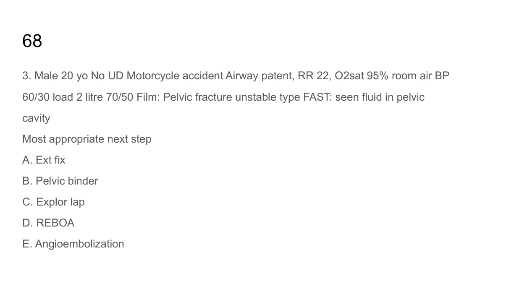
Trauma.pdf, p.6
Source file: Trauma.pdf | Targeted repair from Trauma.pdf pages 6-7. Generic extraction merged nearby items and flagged this as a missing-number mixed block.
Reference: Source: Trauma.pdf | p.6-7
Q6. A 5-year-old male was riding a bicycle and was struck by a bus. He presents to ED with abdominal pain. Systolic blood pressure is 54/30 and HR is 170. He weighs 28 kg. The most appropriate form of fluid resuscitation in this patient if he remains hypotensive is: [MCQ 61]
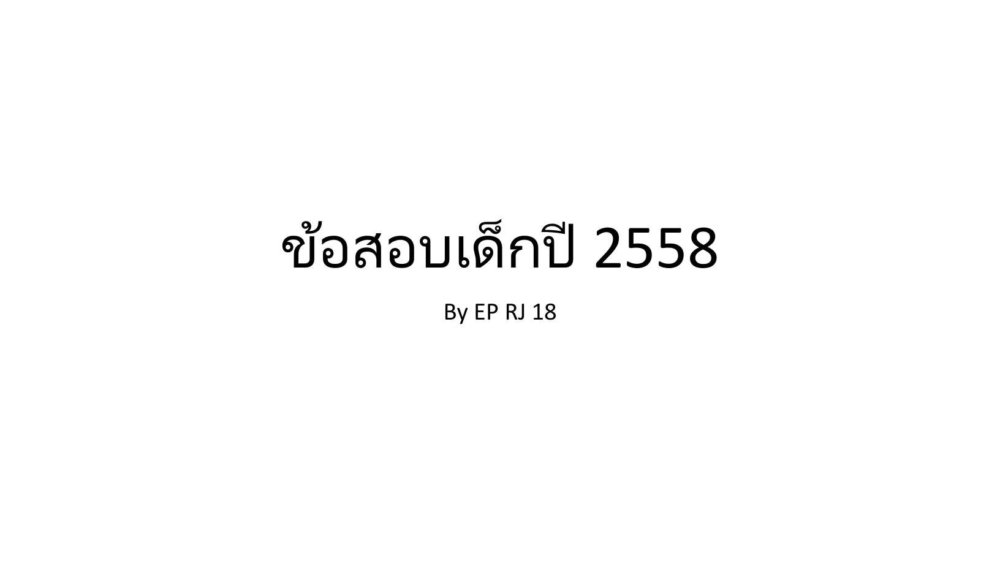
เด็ก trauma.pdf, p.1
Source file: เด็ก trauma.pdf | Embedded old-exam question present in เด็ก trauma.pdf; added because generic parsing kept only an answer-fragment-like tail.
Reference: Source: เด็ก trauma.pdf | p.1-64
Q7. เด็ก7 ปีมําด้วยอํากํารปวดท้องBilious vomiting มีประวัติ4 วันก่อนไปกระแทกกับแฮนด์รถจักรยําน(Handlebar Injury) ตรวจร่ํางกํายBT 37.7 HR 118, BP 100/80, Abdomen Distend, tender at umbilicus area, Hyperactive Bowel sound Film Bowel dilate ??? หํารูปไม่เจอ ถํามDiagnosis [MCQ 64]
Q9. A 5 year old male was riding a bicycle and was struck by a bus. He presents to ED with the complaint of abdominal pain. The patient’s systolic blood pressure is 54/30 and the HR is 170. He weighs 28 kg. The most appropriate form of fluid resuscitation in this patient if they remain hypotensive is: เด็กtrauma BP drop ถํามกํารresuscitation? [MCQ 61]
Q11. female 28 year old female had a car accident. She uses a seat belt and has an abrasion line and contusion from left to right of lower abdomen. she complained tender at lower abdomen without guarding. Consciousness is good. FAST neg and no blood per urethra. which organ is suspected to injury
Q12. Male 20 yo No UD Motorcycle accident Airway patent, RR 22, O2sat 95% room air BP 60/30 load 2 litre 70/50 Film: Pelvic fracture unstable type FAST: seen fluid in pelvic cavity Most appropriate next step
Q15. female 28 year old female had a car accident. She uses a seat belt and has an abrasion line and contusion from left to right of lower abdomen. she complained tender at lower abdomen without guarding. Consciousness is good. FAST neg and no blood per urethra. which organ is suspected to injury
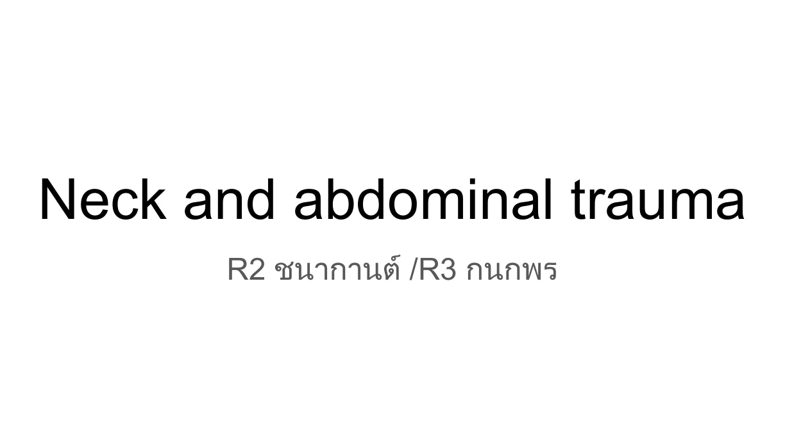
Trauma.pdf, p.1
Source file: Trauma.pdf
Reference: Source: Trauma.pdf | p.1-62
Q16. Pelvic Fx + BP drop + FAST positive ถาม Management
Trauma.pdf, p.1
Source file: Trauma.pdf
Reference: Source: Trauma.pdf | p.1-62
Head / Face / Neck / Spine Trauma
Q1. A 77-year-old woman presented at the emergency department with chest pain for 1 hour. She had a medical history of hypertension. She described the character of the pain as sudden, tearing pain radiating to the back. She also felt slight faintness. Physical examination revealed blood pressure 120/70 mmHg, pulse rate 82/min, respiratory rate 20/min, body temperature 36.6, O2 saturation 99%. The electrocardiogram showed a normal sinus rhythm with nonspecific ST deviation. POCUS showed an internal flap at the ascending aorta, ascending aortic dilatation. What is the most appropriate investigative approach in accordance with ESC guidelines for the optimal management of this patient?
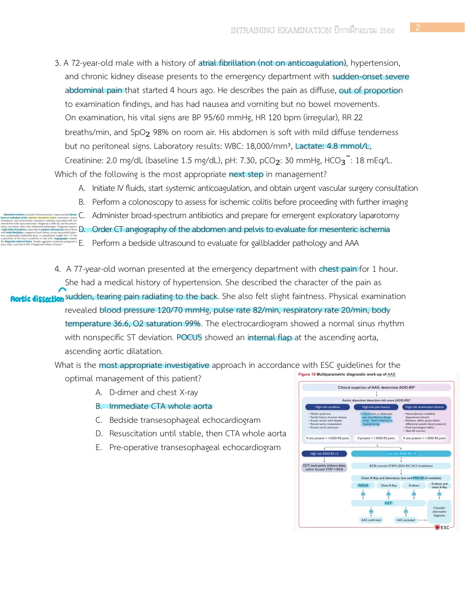
Intraining exam 100 ข้อ 12 Jan 2026, p.3
Source file: Intraining exam 100 ข้อ 12 Jan 2026 | Intraining source-preserving stem/options. No official answer key was found in the PDF; keep unanswered until verified. | Review flags: missing_verified_answer_key
Q2. A 10-year-old boy and his family travel from Bangkok to Leh Ladakh at 3,500 meters. Within 24 hours, he develops a persistent headache, nausea, dizziness, and difficulty sleeping. His parents give him ibuprofen, but his symptoms worsen, and he begins to appear confused and ataxic. In the emergency department of Leh Ladakh, he is afebrile, tachycardic (HR 120 bpm), tachypneic (RR 30/min), and normotensive. His SpO₂ is 85% on room air. A neurological exam reveals ataxia and alters mental status (GCS 13). Which of the following is the most critical next step in management?
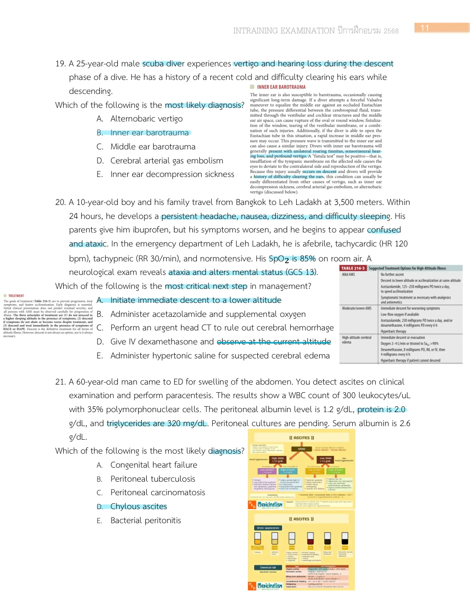
Intraining exam 100 ข้อ 12 Jan 2026, p.12
Source file: Intraining exam 100 ข้อ 12 Jan 2026 | Intraining source-preserving stem/options. No official answer key was found in the PDF; keep unanswered until verified. | Review flags: missing_verified_answer_key
Q3. A 5-year-old child with known Acute Lymphoblastic Leukemia (ALL) presents to the Emergency Department with lethargy, headache, blurred vision, and respiratory distress. On examination, the child has tachycardia, hypertension, and mild hepatosplenomegaly. Laboratory tests reveal: WBC count: 350,000/mm³, hematocrit: 40%, Platelet count: 30,000/mm³ What is the most appropriate initial management for this child’s condition?
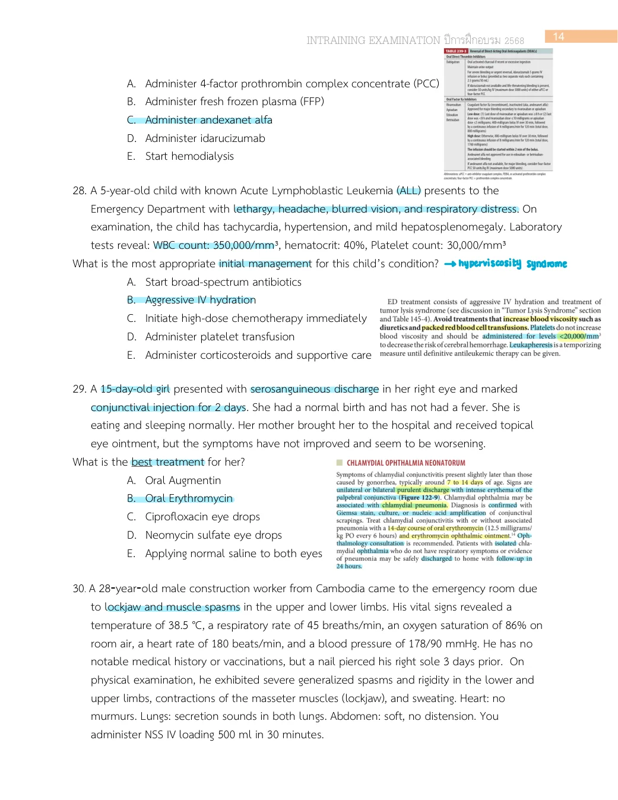
Intraining exam 100 ข้อ 12 Jan 2026, p.15
Source file: Intraining exam 100 ข้อ 12 Jan 2026 | Intraining source-preserving stem/options. No official answer key was found in the PDF; keep unanswered until verified. | Review flags: missing_verified_answer_key
Q4. A 45-year-old woman presents with a 7-day history of progressive weakness, starting in her legs and now involving her arms and face. She also reports difficulty swallowing and shortness of breath over the past 24 hours. On examination, there is symmetrical flaccid paralysis, absent deep tendon reflexes, and bilateral facial weakness. Respiratory rate is 28 breaths per minute, and arterial blood gas shows pH 7.31, PaCO₂ 50 mmHg, and PaO₂ 65 mmHg on room air. Cerebrospinal fluid analysis reveals elevated protein with a normal white cell count. Nerve conduction studies are pending. What is the most critical next step in management?
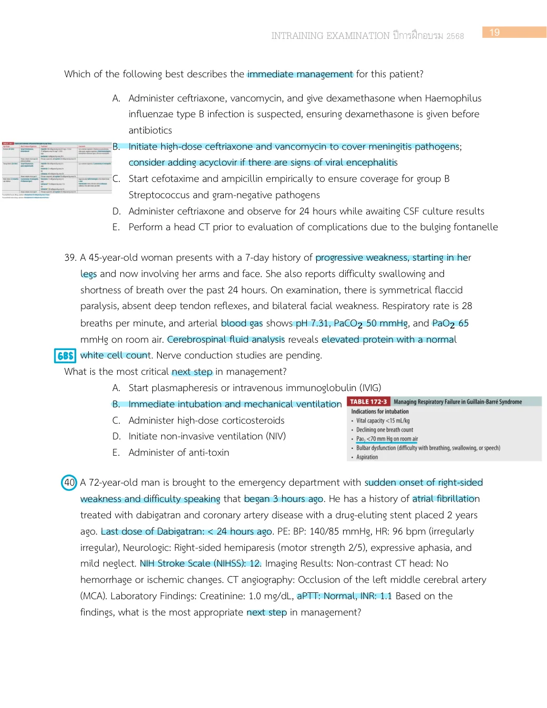
Intraining exam 100 ข้อ 12 Jan 2026, p.20
Source file: Intraining exam 100 ข้อ 12 Jan 2026 | Intraining source-preserving stem/options. No official answer key was found in the PDF; keep unanswered until verified. | Review flags: missing_verified_answer_key
Q5. A 72-year-old man is brought to the emergency department with sudden onset of right-sided weakness and difficulty speaking that began 3 hours ago. He has a history of atrial fibrillation treated with dabigatran and coronary artery disease with a drug-eluting stent placed 2 years ago. Last dose of Dabigatran: < 24 hours ago. PE: BP: 140/85 mmHg, HR: 96 bpm (irregularly irregular), Neurologic: Right-sided hemiparesis (motor strength 2/5), expressive aphasia, and mild neglect. NIH Stroke Scale (NIHSS): 12. Imaging Results: Non-contrast CT head: No hemorrhage or ischemic changes. CT angiography: Occlusion of the left middle cerebral artery (MCA). Laboratory Findings: Creatinine: 1.0 mg/dL, aPTT: Normal, INR: 1.1 Based on the findings, what is the most appropriate next step in management?
Intraining exam 100 ข้อ 12 Jan 2026, p.20
Source file: Intraining exam 100 ข้อ 12 Jan 2026 | Intraining source-preserving stem/options. No official answer key was found in the PDF; keep unanswered until verified. | Review flags: missing_verified_answer_key
Q6. A 10-year-old boy presents to the emergency department with sudden, repetitive eye blinking and shoulder shrugging that started a few months ago. His parents report that he can suppress the behaviour temporarily, but it worsens with stress. What is the most likely diagnosis?
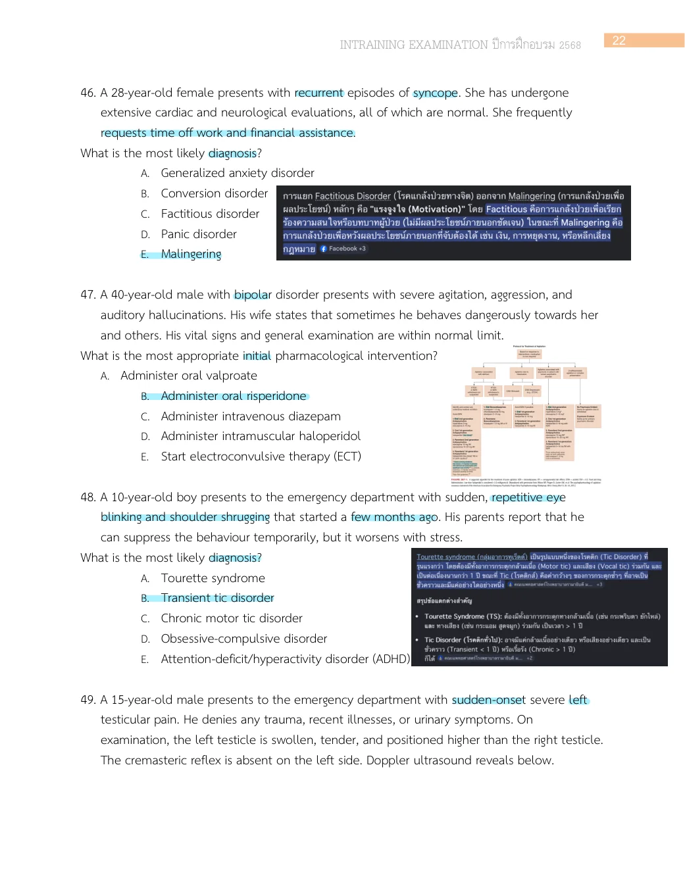
Intraining exam 100 ข้อ 12 Jan 2026, p.23
Source file: Intraining exam 100 ข้อ 12 Jan 2026 | Intraining source-preserving stem/options. No official answer key was found in the PDF; keep unanswered until verified. | Review flags: missing_verified_answer_key
Q7. A 32-year-old male presents to the emergency department following a motor vehicle collision. He has a cervical spine fracture at C3, visible bruising on the side of his neck and seatbelt signs. On examination, there are no focal neurological deficits. Which of the following statements is true regarding the evaluation and management of blunt cerebrovascular injury (BCVI)?
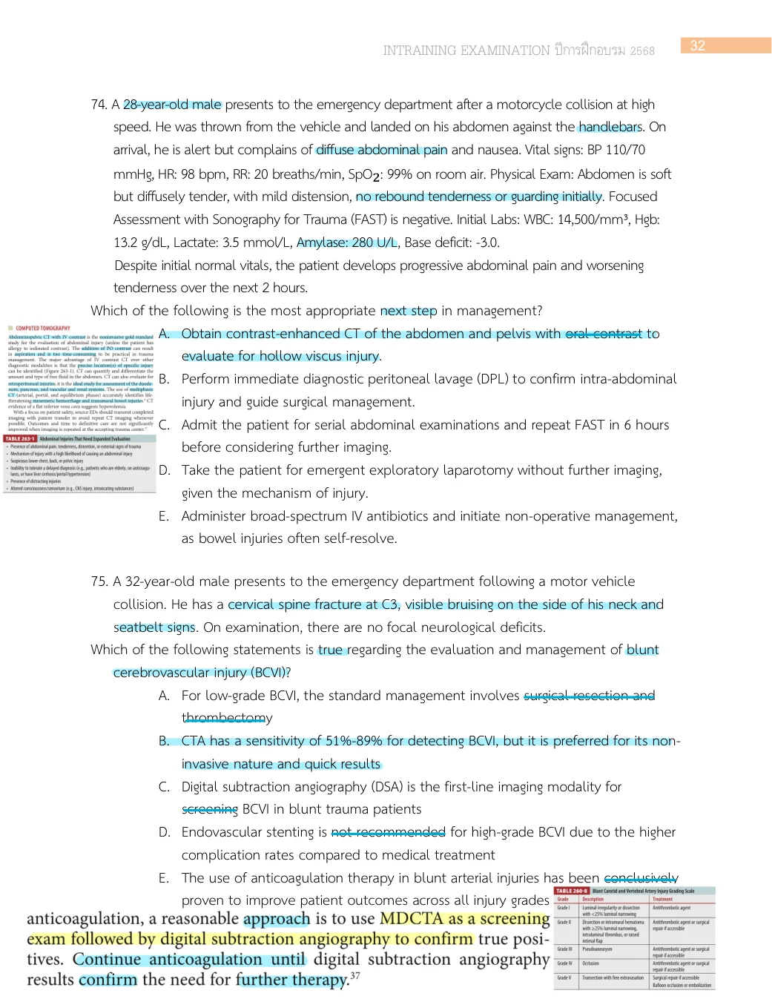
Intraining exam 100 ข้อ 12 Jan 2026, p.33
Source file: Intraining exam 100 ข้อ 12 Jan 2026 | Intraining source-preserving stem/options. No official answer key was found in the PDF; keep unanswered until verified. | Review flags: missing_verified_answer_key
Q8. A 50-year-old man was transported to the emergency department after falling downstairs. Initially, he remained conscious, but an hour later, his son found him unconscious and brought him to the hospital. On arrival, his Glasgow Coma Scale (GCS) score is 7. A computed tomography (CT) scan of the head is shown below. Which of the following pathophysiological mechanisms is primarily responsible for the rapid neurological deterioration in this condition?
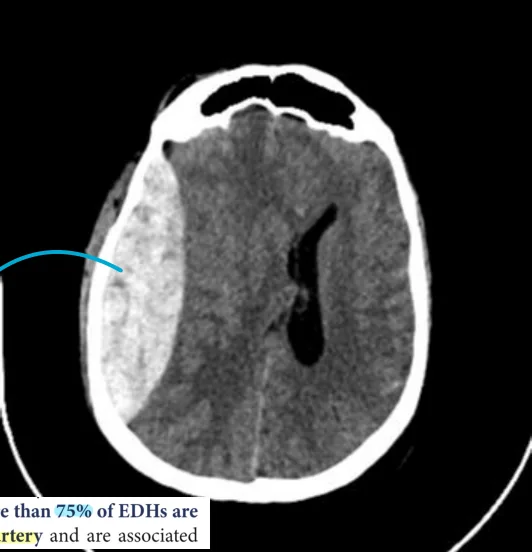
Intraining 2569 Q80 source image
Source file: Intraining exam 100 ข้อ 12 Jan 2026 | Intraining source-preserving stem/options. No official answer key was found in the PDF; keep unanswered until verified. | Review flags: missing_verified_answer_key
Q9. ผู้ชาย 50 ปี MCA มีอาการปวดหลัง รูสึกตัวดี. V/S ดีabdomen : soft, no guard. Back : tender at RtหรือLt. Lateral flank&lateral lumbar spine (ไม่ได้ปวดตรงกลาง) Work up CXR, pelvis: no Fx. FAST negative. UA :RBC 15-20 ถามว่าตอ้ งท า อะไรต่อ
Q10. Female 70 year old come to ED with falling from stairs. She had multiple facial swelling and ecchymosis. On physical examination, you can palpable deformity from maxilla up to floor of orbit and nasal but not involve zygomatic bone. What is the diagnosis?
Q11. Female 34 yr. was hit by tennis ball presented with left eye pain. PE: right eye normal , left eye proptosis , decrease VA , limit EOM ,IOP 45 mmHg. Which of the following appropriate management ?
Q17. A 8 year old boy was a rear seat passenger who was wearing a lap belt in a vehicle. He complains of neck pain, abdominal pain and lower back pain. His vital signs are BT 37.1, BP 101/53, HR 105, RR 22 and SpO2 98%RA. His airway is patent, he has no respiratory compromise. Physical exam is remarkable for cervical spine and lumbar spine tenderness and bilateral lower quadrant abdominal tenderness with a band like area of ecchymosis over the lower abdomen. Neurologic examination is normal. Plain radiographs of cervical and lumbar spine are normal and FAST exam is negative. What is the most appropriate next step in this patient's treatment? [MCQ 61]
เด็ก trauma.pdf, p.1
Source file: เด็ก trauma.pdf | Embedded old-exam question present in เด็ก trauma.pdf after Q25; added because generic numbered parsing missed it.
Reference: Source: เด็ก trauma.pdf | p.1-64
Q18. 34 ปี ขับรถชน... มี large laceration ที่ scalp EMS ทํา manual in line BT 37 BP 80/50 RR 8 shallow no stridor P130 O2sat 93 E1V1M2 pupill react to light both eyes Normal cheast and abdominal exam What is the most priority management
Q20. Male 35 yr, was stabbed by knife at right anterolateral of neck (middle level) V/S stable good consciousness but have pulsatile hematoma around wound. Cant palpable pulse of right carotid artery. normal pulse of left carotid artery. no dyspnea or stridor. What is the next management for this patient?
Q23. Male 35 yr, was stabbed by knife at right anterolateral of neck (middle level) V/S stable good consciousness but have pulsatile hematoma around wound. Cant palpable pulse of right carotid artery. normal pulse of left carotid artery. no dyspnea or stridor. What is the next management for this patient?
Trauma.pdf, p.1
Source file: Trauma.pdf
Reference: Source: Trauma.pdf | p.1-62
Q24. years old male was brought to ER after being stabbed in the neck with knife. Physical examination revealed stabbed wound at region between angle of mandible and base of occipital bone with intact platysma. Which of the following is the next best step in management?
Trauma.pdf, p.1
Source file: Trauma.pdf
Reference: Source: Trauma.pdf | p.1-62
Burn / Wound / Soft Tissue Trauma
Q1. A 30 year-old-man was bitten by his snake at his right index 1 hour ago. He has only two small puncture wounds with no active bleeding at his index. He does not have any muscle weakness or other symptoms. His snake picture is shown. What is the most appropriate management?
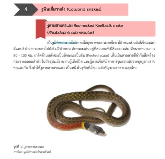
Intraining 2569 Q17 source image
Source file: Intraining exam 100 ข้อ 12 Jan 2026 | Intraining source-preserving stem/options. No official answer key was found in the PDF; keep unanswered until verified. | Review flags: missing_verified_answer_key
Q2. A 30-year-old male was strike by the baseball bat 2 days ago. The laceration wound behind his right ear was sutured. Upon follow up, he has right ear pain without discharge. His hearing is normal but his external ear is as shown. What is the most appropriate treatment?
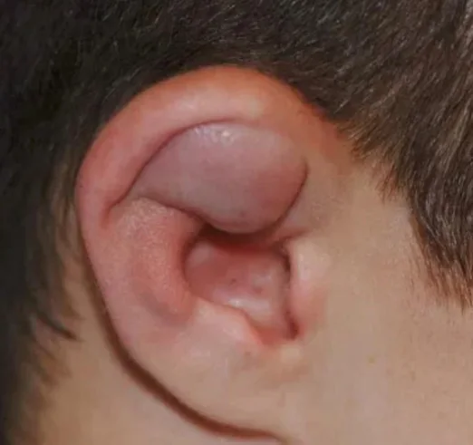
Intraining 2569 Q72 source image
Source file: Intraining exam 100 ข้อ 12 Jan 2026 | Intraining source-preserving stem/options. No official answer key was found in the PDF; keep unanswered until verified. | Review flags: missing_verified_answer_key
Q4. Accident , left arm wound, active arterial pulsatile bleeding, cap refill 3 sec, ใส่ Tourniquet เหนือแผลแล้ว มาถึง ER ยังคง active bleed What Next step management
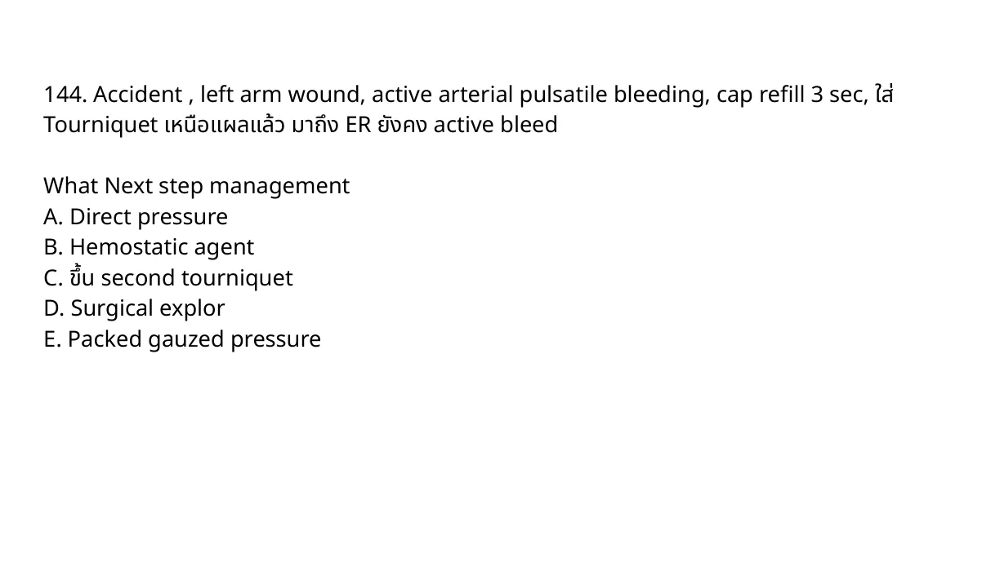
MCQ 2025 รวมไม่แยกหัวข้อ.pdf, p.118
Source file: MCQ 2025 รวมไม่แยกหัวข้อ.pdf | Tourniquet เหนือแผลแล้ว มาถึง ER ยังคง active bleed | Review flags: targeted_category_review
Q5. Accident , left arm wound, active arterial pulsatile bleeding, cap refill 3 sec, ใส่ Tourniquet เหนือแผลแล้ว มาถึง ER ยังคง active bleed What Next step management
Q6. Boy5 yr ล้ม ชายโครงขวากระแทกขอบโต๊ะ มีอาการปวดเวลาขยับและสัมผัส ไม่มีแผล ไม่มีอาการอื่น no hematuria v/s stable, PE tender Rt flank on palpation , no abrasion wound, no ecchymosis , ส่งแลป UA RC 20-30 , wc 10 ถาม next management
Q7. Male gunshot wound at left arm Vital sign stable PE: active pulsatile bleed left arm , cap refill 4 sec , cool extremities What is the next step management
Q1. A 25-year-old male scuba diver experiences vertigo and hearing loss during the descent phase of a dive. He has a history of a recent cold and difficulty clearing his ears while descending. Which of the following is the most likely diagnosis?
Intraining exam 100 ข้อ 12 Jan 2026, p.12
Source file: Intraining exam 100 ข้อ 12 Jan 2026 | Intraining source-preserving stem/options. No official answer key was found in the PDF; keep unanswered until verified. | Review flags: missing_verified_answer_key
Q4. เด็กตก merry-go around 1 m. ไมมีอาการอะไร neuro ดี มี bruise 2x2 ที่ occiput
MCQ PED trauma 66.pdf, p.1
Source file: MCQ PED trauma 66.pdf
Reference: Source: MCQ PED trauma 66.pdf | p.1-15
Q5. เด็กตก merry-go around 1 m. ไมมีอาการอะไร neuro ดี มี bruise 2x2 ที่ occiput
MCQ PED trauma 66.pdf, p.1
Source file: MCQ PED trauma 66.pdf
Reference: Source: MCQ PED trauma 66.pdf | p.1-15
Q6. เด็กอายุ 8 ปี เอาแขนกระแทกพื้น ให้ film มา ถาม diagnosis
MCQ 2566 combined.pdf, p.21
Source file: MCQ 2566 combined.pdf | Targeted repair from MCQ 2566 combined.pdf page 21. The source text says a film was provided, but the available PDF page does not include a recoverable film image.
Source file: MCQ 2566 combined.pdf | Targeted repair from MCQ 2566 combined.pdf page 21. The source text says a figure was provided, but the available PDF page does not include a recoverable fracture image.
Q12. 6 years-old boy was brought to ED after motor vehicle collision. The child was clinical stable. Physical examination revealed bruise at right flank region. Urinalysis shown clear urine, RBC 5-10, WBC 2-3, no organism was found. What is the most appropriate management ?
Q13. A 4-year-old boy came to the ED after falling from his stroller. He was crying holding teeth in his hands. You performed physical examination and found that he lost 4 anterior teeth. There was no active bleeding. Other physical examination were normal. What is the most appropriate management?
เด็ก trauma.pdf, p.1
Source file: เด็ก trauma.pdf | Targeted repair from เด็ก trauma.pdf source text; original parser merged later embedded elbow/head-injury questions into this item.
Q17. เด็ก10 ปีกินsafety pin มํา16 ชมv/s stable PE: abd soft not tender no sign peritonitis ถํามManagement [MCQ 64]
เด็ก trauma.pdf, p.1
Source file: เด็ก trauma.pdf
Reference: Source: เด็ก trauma.pdf | p.1-64
Q18. 12 ปีblast injury, V/S BP drop, RR 24, มีกระสุนอยู่แขนขําwith bleeding wound 6 cm ถํามว่ําเป็นblast injury category ไหน[MCQ 65]
เด็ก trauma.pdf, p.1
Source file: เด็ก trauma.pdf
Reference: Source: เด็ก trauma.pdf | p.1-64
Q19. 5 years old girl came to ER due to falling from 1 meter high table, mild pain at buttock and urine is clear, At ER: BT 37, PR 100, RR 20, BP 90/50, SpO2 99%, PE:WNL, FAST negative, no free fluid, UA: RBC. 30-50, WBC 0-1, Epi 0-1 What is most appropriate management [MCQ 65]
เด็ก trauma.pdf, p.1
Source file: เด็ก trauma.pdf
Reference: Source: เด็ก trauma.pdf | p.1-64
Q20. เด็กชําย9 ปีโดนชกที่คอV/S: HR 90, RR 20, BP 89/60 เสียงแหบคอบวมไม่มีแผลถํามthe most appropriate management [MCQ 65]
เด็ก trauma.pdf, p.1
Source file: เด็ก trauma.pdf
Reference: Source: เด็ก trauma.pdf | p.1-64
Q21. 3 yr boy present with unilateral foul smell rhinorrhea, PE: BT 37, HR 112, RR 20, BP 90/60, HEENT: pus from right nose, plain film shown battery in right nasal cavity, ถํามmost appropriate management [MCQ 65]
Q26. A 3 month old infant was brought to emergency room because of increases lethargy and irritability. The parents stated that the child rolled off the couch and fell on the floor one day prior to presentation. His parents reported that the child had been previously healthy and was up to date on his vaccination. He had been meeting his development milestones. His fontanelles were full. While in office the patient developed a tonic clonic seizure. Which of the following is the most appropriate investigations? [MCQ 61] เด็ก3 เดือนกลิ้งตกเตียงant. fontanelle โป่งถํามinvestigation? [MCQ 61]
Q28. A 3 years old boy presented to emergency department with foreign body in the left nostril. He also had mild URI symptoms without dyspnea or fever for about 3 days. You decided to sedate the patient and successfully removed the foreign body. Suddenly, he started to breathe rapidly with suprasternal retraction and poor air entry both lungs. What is your proper initial management? [MCQ 61]
เด็ก trauma.pdf, p.1
Source file: เด็ก trauma.pdf | Targeted repair from เด็ก trauma.pdf source text; original parser merged following embedded questions into this item.
Q30. เด็กถูกปืนยิงมีรอยเลือดออกที่หน้ําอกและขําขวําAt scene สังเกตว่ํามีเลืดพุ่งออก มํามํากไม่หยุดจะท ําอย่ํางไร[MCQ 62]
เด็ก trauma.pdf, p.1
Source file: เด็ก trauma.pdf
Reference: Source: เด็ก trauma.pdf | p.1-64
Q31. มีFR team 2 คนเจอเด็ก2 ปีarrest โทรขอonline จะแนะน ําอะไร[MCQ 62]
เด็ก trauma.pdf, p.1
Source file: เด็ก trauma.pdf
Reference: Source: เด็ก trauma.pdf | p.1-64
Q32. A 4-years-old boy falls through a cold pond. His heart rate is 80 bpm. At scene, he is intubated and brought to you in ED. You found he is asystole and body temperature is 20 C. The team starts CPR. What is the appropriate next step to manage him? [MCQ 61]
เด็ก trauma.pdf, p.1
Source file: เด็ก trauma.pdf | Embedded old-exam question present in เด็ก trauma.pdf after Q25; added because generic numbered parsing missed it.
Reference: Source: เด็ก trauma.pdf | p.1-64
Q33. เด็ก 8 ขวบ จมนํ้า Paramedic จะทําอะไรต้องของ online medical director
Q36. A 6-year-old boy was brought to ED after motor vehicle collision. The child was clinically stable. Physical examination revealed bruise at the right flank region. Urinalysis showed clear urine, RBC 5-10, WBC 2-3, and no organism. What is the most appropriate management?
เด็ก trauma.pdf, p.1
Source file: เด็ก trauma.pdf | Targeted repair from เด็ก trauma.pdf source text; original parser merged this embedded question with surrounding pediatric trauma notes.
Reference: Source: เด็ก trauma.pdf | p.1-64
Miscellaneous / Mixed Old Exam Items
Q1. Fundoscopic examination as a picture. Which one is true about this patient?
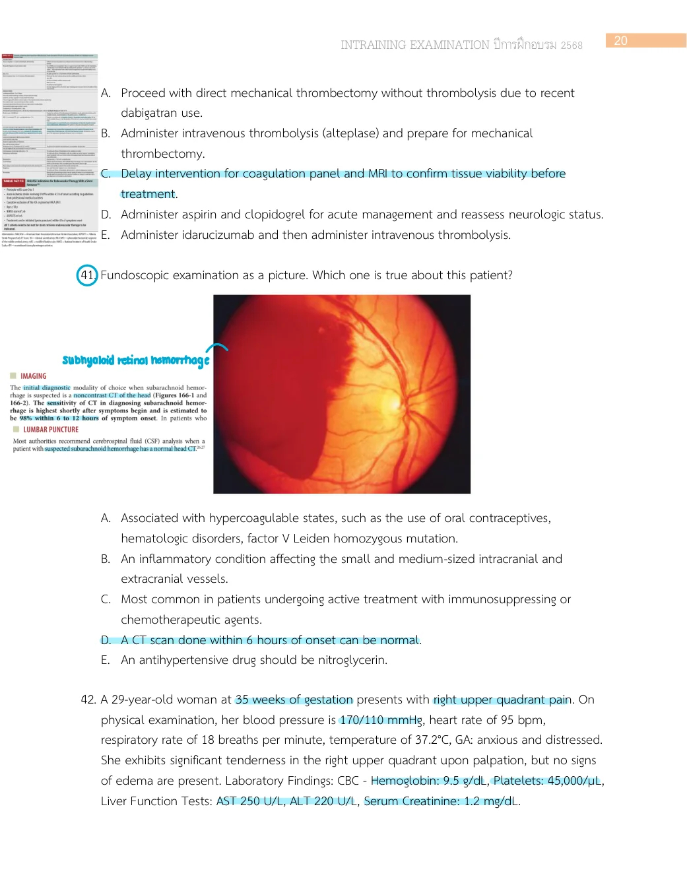
Intraining exam 100 ข้อ 12 Jan 2026, p.21
Source file: Intraining exam 100 ข้อ 12 Jan 2026 | Intraining source-preserving stem/options. No official answer key was found in the PDF; keep unanswered until verified. | Review flags: missing_verified_answer_key
Q2. A 25-year-old pregnant woman at 20 weeks of gestation presents with vaginal discharge and dysuria. A nucleic acid amplification test (NAAT) confirms gonorrhea. She has history of severe allergic to penicillin. What is the most appropriate treatment option?
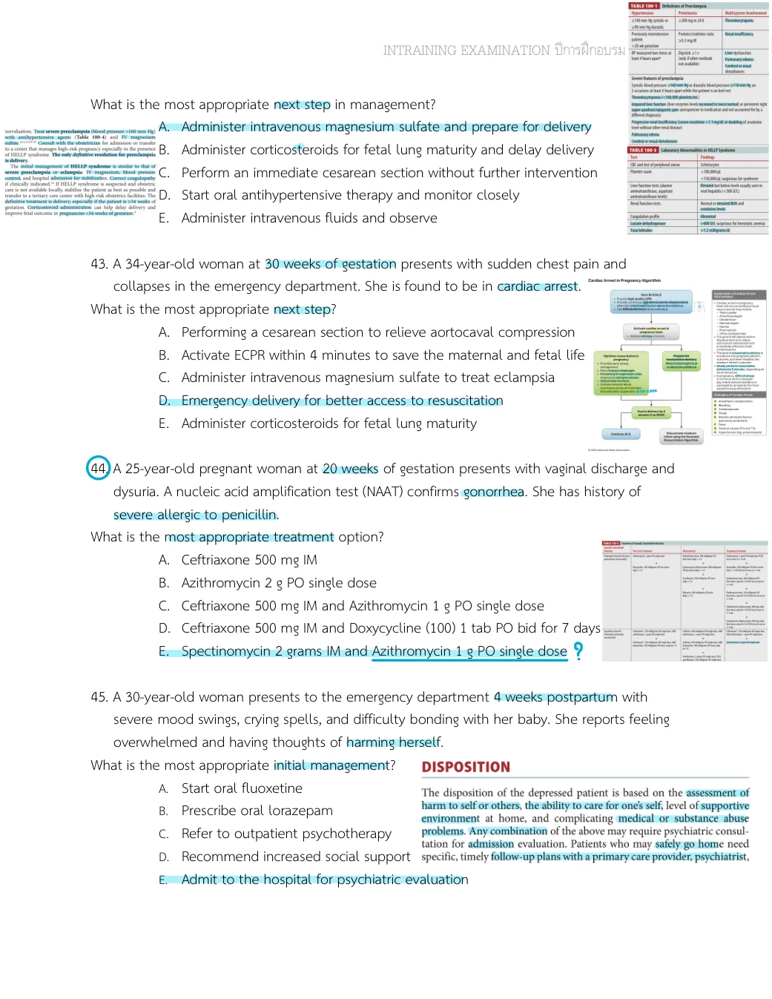
Intraining exam 100 ข้อ 12 Jan 2026, p.22
Source file: Intraining exam 100 ข้อ 12 Jan 2026 | Intraining source-preserving stem/options. No official answer key was found in the PDF; keep unanswered until verified. | Review flags: missing_verified_answer_key
Q3. A 30-year-old woman presents to the emergency department 4 weeks postpartum with severe mood swings, crying spells, and difficulty bonding with her baby. She reports feeling overwhelmed and having thoughts of harming herself. What is the most appropriate initial management?
Intraining exam 100 ข้อ 12 Jan 2026, p.22
Source file: Intraining exam 100 ข้อ 12 Jan 2026 | Intraining source-preserving stem/options. No official answer key was found in the PDF; keep unanswered until verified. | Review flags: missing_verified_answer_key
Q4. A 40-year-old male with bipolar disorder presents with severe agitation, aggression, and auditory hallucinations. His wife states that sometimes he behaves dangerously towards her and others. His vital signs and general examination are within normal limit. What is the most appropriate initial pharmacological intervention?
Intraining exam 100 ข้อ 12 Jan 2026, p.23
Source file: Intraining exam 100 ข้อ 12 Jan 2026 | Intraining source-preserving stem/options. No official answer key was found in the PDF; keep unanswered until verified. | Review flags: missing_verified_answer_key
Source file: Intraining exam 100 ข้อ 12 Jan 2026 | Intraining source-preserving stem/options. No official answer key was found in the PDF; keep unanswered until verified. | Review flags: missing_verified_answer_key
Q8. Female 30 yr ให้ประวัติ motor vehicle accident มีอาการเจ็บหน้าอกซ้าย มาถึงรพ VS BT: 370C, BP 110/70 mmHg, HR 110 bpm, RR 28 bpm, SpO2 RA 90%. PE: lung decreased breath sound left lung, no crepitation ให้รูป barcode sign (u/s) >> what is management ?
Q11. ผูปüยชาย30ปมีประüัติtrauma ที่ขาขüา1üันกนมีbleed แตพันstop มาüันนี้มาดüยปüดขาขüามาก PE mark tender at right legเจ็บมากขึ้นเüลากระดกขเทาถามüาจะทาะไรตไป
Q27. 2 years old presented with ecchymosis along extremities after minor trauma no petechiae no known U/D Lab Plt 280k, PTT 65, PT 14 Appropiate investigation?
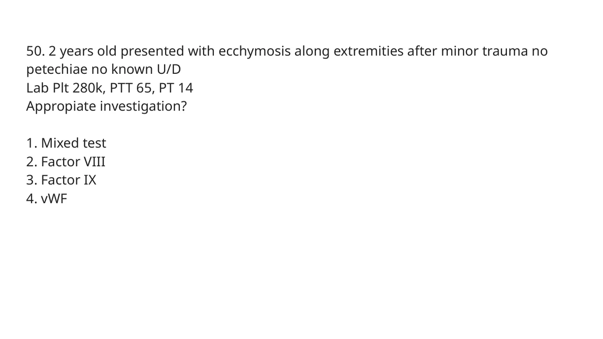
MCQ 2025 รวมไม่แยกหัวข้อ.pdf, p.38
Source file: MCQ 2025 รวมไม่แยกหัวข้อ.pdf | petechiae no known U/D
Q1. A 34-year-old woman at 30 weeks of gestation presents with sudden chest pain and collapses in the emergency department. She is found to be in cardiac arrest. What is the most appropriate next step?
Intraining exam 100 ข้อ 12 Jan 2026, p.22
Source file: Intraining exam 100 ข้อ 12 Jan 2026 | Intraining source-preserving stem/options. No official answer key was found in the PDF; keep unanswered until verified. | Review flags: missing_verified_answer_key
Q2. A 28-year-old female presents with recurrent episodes of syncope. She has undergone extensive cardiac and neurological evaluations, all of which are normal. She frequently requests time off work and financial assistance. What is the most likely diagnosis?
Intraining exam 100 ข้อ 12 Jan 2026, p.23
Source file: Intraining exam 100 ข้อ 12 Jan 2026 | Intraining source-preserving stem/options. No official answer key was found in the PDF; keep unanswered until verified. | Review flags: missing_verified_answer_key
Q3. A 58-year-old male with diabetes mellitus and chronic obstructive pulmonary disease (COPD) presents to the emergency department with progressive dyspnea, pleuritic chest pain, and fever for five days. He was recently hospitalized for community-acquired pneumonia but discharged without completing his antibiotic course. On examination, he is febrile (38.9°C), tachycardic (HR 118 bpm), and tachypneic (RR 26/min). Breath sounds are diminished on the right lower lung field with dullness to percussion. Investigations: Chest X-ray: Large right-sided pleural effusion with mediastinal shift. Diagnostic Thoracentesis: Appearance: Purulent, pH: 6.8, Glucose: 28 mg/dL, LDH: 2,300 U/L, Gram stain: Gram-positive cocci. Which of the following is the most appropriate next step in management?
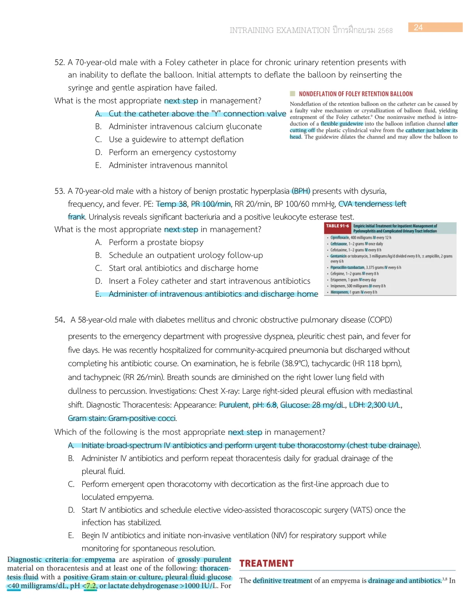
Intraining exam 100 ข้อ 12 Jan 2026, p.25
Source file: Intraining exam 100 ข้อ 12 Jan 2026 | Intraining source-preserving stem/options. No official answer key was found in the PDF; keep unanswered until verified. | Review flags: missing_verified_answer_key
Q4. An 80-year-old female presents to the emergency department after a fall from standing height. Her only past history is hypertension. She complains of severe right-sided chest pain and difficulty breathing. Vital signs are BP 120/75 mmHg, HR 110 bpm, RR 28/min, SpO2 90% on room air. Physical examination reveals paradoxical inward movement of the involved the right chest wall segment during spontaneous inspiration and outward movement during expiration. Chest X-ray confirms multiple contiguous right 4th – 6th rib fractures, each rib exhibits segmental fractures at two distinct sites, resulting in free-floating rib segments, without pneumothorax or hemothorax seen. What is the most appropriate initial management for this patient?
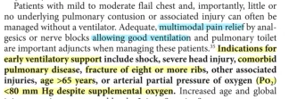
Intraining 2569 Q79 source image
Source file: Intraining exam 100 ข้อ 12 Jan 2026 | Intraining source-preserving stem/options. No official answer key was found in the PDF; keep unanswered until verified. | Review flags: missing_verified_answer_key
Q9. ml of NSS repeated 3 times followed by 280 ml of PRC 22. A 2 years old girl was brought to the emergency department after falling on her left sided from horse. She has tachypnea, oxygen sat 91%, vital signs BP 75/40, PR 140, RR 45. She complains chest pain on the left side with contusion of left chest area. Her abdomen and pelvis are all normal, including her neurological signs. FAST is negative, and chest xray show no rib fracture with haziness at left lung. What is the explanation of her tachycardia and desaturation? [MCQ 61]
เด็ก trauma.pdf, p.1
Source file: เด็ก trauma.pdf
Reference: Source: เด็ก trauma.pdf | p.1-64
Q10. 27 YOM motorcycle accident มี penetrating wound 4th ICS, MCL ข้างขวา EMS ทํา three-side occlusive dressing มาแล้ว มาถึง ER เป็น tension pneumothorax ข้างขวา what is the appropriate next step?
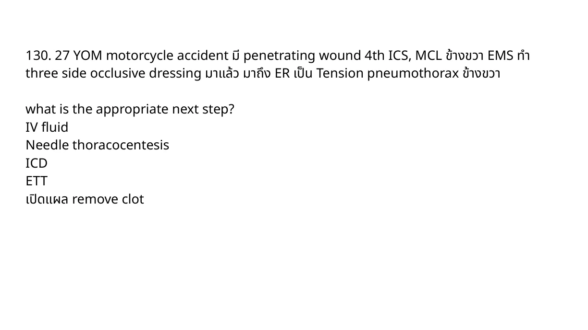
MCQ 2025 รวมไม่แยกหัวข้อ.pdf, p.112
Source file: MCQ 2025 รวมไม่แยกหัวข้อ.pdf | what is the appropriate next step?
Q1. A 8 year old boy fell onto an outstretched hand from a tree. He complained severe pain of his right elbow and forearm. Film x-ray was revealed below. If this patient has nerve injury ,what is the most likely clinical presentation?
Intraining 2569 Q76 source image
Source file: Intraining exam 100 ข้อ 12 Jan 2026 | Intraining source-preserving stem/options. No official answer key was found in the PDF; keep unanswered until verified. | Review flags: missing_verified_answer_key
Q2. A 16-year-old man presents with elbow pain while playing basketball. Film x-ray was shown below. What is the most appropriate steps for elbow reduction?
Intraining 2569 Q91 source image
Source file: Intraining exam 100 ข้อ 12 Jan 2026 | Intraining source-preserving stem/options. No official answer key was found in the PDF; keep unanswered until verified. | Review flags: missing_verified_answer_key
Q3. A 35-year-old male presents to the emergency department after sustaining a traumatic injury to his left hand while operating heavy machinery. Upon examination, his left hand is found to be severely injured, and a partial amputation of the left index finger is noted. Which of the following is the most appropriate next step in managing the amputated part?
Intraining exam 100 ข้อ 12 Jan 2026, p.43
Source file: Intraining exam 100 ข้อ 12 Jan 2026 | Intraining source-preserving stem/options. No official answer key was found in the PDF; keep unanswered until verified. | Review flags: missing_verified_answer_key
Q5. เด็กลมเขากระแทก ใหรูป film เปน distal femur fx ถามวาเปน salter harris type ไหน Choice: type 1,2,3,4,5 (MCQ ป 66) 124. เด็กลมเขากระแทก ใหรูป film เปน distal femur fx ถามวาเปน salter harris type ไหน Choice: type 1,2,3,4,5 (MCQ ป 66)
Q6. เด็กชาย 14 ป ปวดเขาดานขวา ปวดมากเวลากระโดดหรือวิ่ง ดีขึ้นเมื่อนั่งพัก ตรวจ รางกาย V/s stable, tender ที่ tibial tuberosity, full ROM knee and hip >> film Rt.knee: irregular prominence tibial tuberosity
MCQ PED trauma 66.pdf, p.1
Source file: MCQ PED trauma 66.pdf
Reference: Source: MCQ PED trauma 66.pdf | p.1-15
Q7. A pregnant woman GA 34 weeks presented with MCA with multiple ribs fracture with lung contusion ลังOxygen support ตมาเจาะABG ไดpH 7.35 pCO2 45 จงMx
Q8. Clinical: pull elbow What is the most appropriate management [MCQ 65]
เด็ก trauma.pdf, p.1
Source file: เด็ก trauma.pdf
Reference: Source: เด็ก trauma.pdf | p.1-64
Q9. A 14 year old male, presented with left knee pain for a week with a swollen knee. He can flex and extend full range of motion. He denied history of trauma. He is a keen athlete. film lateral knee : reveal irregularity and prominent fragmentation of the tibial tubercle. Which of the following is the most appropriate management? [MCQ 64]
Q11. A 7 year old boy presents with elbow pain following a fall on his outstretched arm. Elbow films reveal small anterior and posterior fat pads but no obvious cortical break of bone. What is the most likely diagnosis? [MCQ 61]
เด็ก trauma.pdf, p.1
Source file: เด็ก trauma.pdf | Embedded old-exam question present in เด็ก trauma.pdf after Q25; added because generic numbered parsing missed it.
Reference: Source: เด็ก trauma.pdf | p.1-64
Q12. severe trauma ที่หัวและหน้า BP 140/80, HR 118, sat 84%RA, GCS 12 เป็น unstable fracture ที่หน้าและ bleed ปริมาณมากในปาก สักพัก GCS เหลือ 9 ได้ preoxygenation และ ใส่ ETT เป็น direct fail *2 และ LMA ใส่แล้วไม่สามารถ ventilate ได้ กลับมา try bag mask c bag แล้วไม่ สามารถ ventilate ได้ ให้ Mx อะไร
Q2. EMS is called by the family of a 35-year-old man on warfarin for a mechanical heart valve after he fell off a 5-foot ladder in his kitchen, striking his head. He is confused, opens his eyes to speech, and localizes pain. His vital signs are BP 128/54, HR 60, SpO2 99% on RA, RR 14, and his fingerstick glucose 89. A commu nity hospital is 5 minutes away and a level 1 trauma center is 25 minutes away. Based on his presentation, which is the MOST APPROPRIATE?
Q3. EMS is called for a 22-year-old helmeted male motor cyclist who was traveling on a highway when he was sideswiped and crashed. On arrival he is comatose and has a Glasgow coma scale (GCS) of 3. His helmet was removed by EMS and he is brought to the nearest 19 community hospital. His vital signs are BP 85/33, HR 140, SpO2 89% on nonrebreather, and a RR 6. He has bilateral breath sounds. The NEXT BEST step in management for this patient is?
Q4. A 47-year-old mechanic presents with a large lacera tion to the left antecubital fossa after a piece of metal he was hoisting fell onto him. He appears to have no other injuries and arrived by a private car from the garage holding pressure over the site with a piece of shirt. His vital signs are BP 115/74, HR 110, SpO2 99% on RA, and a RR 14. Per his report, “there was a lot of blood on the ground.” His primary survey notes no issues with airway or breathing, intravenous access is established in the right arm, and you are at a com munity hospital. He has diminished pulse with intact sensation and motor function. How would you pro ceed with evaluating the wound?
Q5. During the evaluation of a 35-year-old woman who was the restrained driver in a rollover MVC, EMS established intravenous access and gave her 1 L of normal saline en route. Her vital signs on arrival are BP 87/45, HR 125, SpO2 99% on RA, and RR 16. She has a Glasgow coma scale (GCS) of 15 and bilateral breath sounds. She reports severe abdominal pain. She is at a trauma center. Her FAST (focused assessment with sonography for trauma) examination is positive. What is the NEXT BEST step for this patient?
Q6. A 37-year-old woman is injured following an assault by her partner. She reports severe abdominal pain. A FAST (focused assessment with sonography for trauma) examination is positive. Her vital signs are BP 100/75, HR 110, SpO2 99% on RA, and a RR 15. What hemorrhage class is she currently exhibiting?
Q7. A 78-year-old man presents after falling onto his right hip. No other injuries are noted, and the patient denies head strike, neck pain, chest, or abdominal pain. He reports pain with range of motion of the right hip. The right foot is neurovascularly intact and no deformity is noted. Plain films of the right hip are unremarkable. What is MOST sensitive and specific test to diagnose a hip fracture in this patient?
Q9. A 72-year-old man with a history of atrial fibrilla tion on warfarin presents after a fall with head strike due to tripping on his dog’s leash. He lives with his wife and has no other medical issues. His physical examination is notable only for a forehead abrasion. His international normalized ratio (INR) is 2.0, his Glasgow coma scale (GCS) is 15, and he ambulates without difficulty. His head CT is negative for acute hemorrhage. He reports that he feels safe going home. What is the NEXT BEST step?
Q10. A 97-year-old man presents after he was involved in a T-bone collision where he was struck on the driver’s side. He reports severe chest pain. His physical exam ination is notable for left-sided chest wall tenderness. His only medication is lisinopril for hypertension. A chest x-ray shows a displaced posterior third right rib fracture. A chest CT reveals nondisplaced fractures of the second, fourth, and fifth ribs without pneumo thorax or hemothorax. The patients’ CT scans of his head, neck, abdomen, and pelvis reveal no other inju ries. What is the NEXT BEST step in management for this patient?
Q13. A 36-year-old woman, who is 36 weeks pregnant, pres ents after she was involved in a rollover motor vehicle collision. Another passenger in the compartment was killed. The patient is brought in on a backboard. EMS has established IV access and has administered 1 L of normal saline. Her vital signs are BP 75/63, HR 130, SpO2 93% on RA, RR 20, and Glasgow coma scale (GCS) of 15. She has bilateral breath sounds. What is the NEXT BEST step in management?
Q15. A FAST (focused assessment with sonography for trauma) examination is negative, and after discussion with trauma surgery, the patient undergoes CT scans of the neck, chest, abdomen, and pelvis that are nega tive. It is discovered that she is pregnant with a quan titative beta-human chorionic gonadotropin (β-hCG) that is consistent with 7-week gestation and an intra uterine pregnancy is confirmed. What is the NEXT BEST for this patient?
Q16. A 33-year-old woman whose abdomen appears gravid presents after she was involved in a high-speed motor vehicle collision. She arrives via EMS in a cer vical collar, intubated, with an IV established and 1 L of crystalloid administered prehospital. She is on a backboard but her uterus is being manually displaced to the left by a medic. Her vital signs are BP 80/55, HR 135, SpO2 96% on 100 FiO2, and mechanically ventilated with RR 18. She has a Glasgow coma scale (GCS) of 3T. She has bilateral breath sounds. The fun dal height is noted to be 4 cm above the umbilicus. A FAST (focused assessment with sonography for trauma) examination is positive. A chest x-ray notes the tube in correct position with bilateral opacities. She is taken to a trauma center. An obstetric resident notes fetal heart tones of 80. What is the NEXT BEST step?
Q17. A 28-year-old man is ejected from a car and is brought to the emergency department by EMS intubated with a Glasgow coma scale (GCS) of 3. A cervical collar is in place and the patient has bilateral breath sounds. What is your goal mean arterial pressure (MAP) for this patient?
Q19. A 22-year-old woman is thrown from the back of motorcycle without a helmet. Upon arrival EMS finds her to be comatose with agonal respirations and intubates her. En route she is noted to have a seizure and is given midazolam. On arrival in the emergency department, she has a Glasgow coma scale (GCS) of 3 and a fixed, dilated right pupil. This is MOST consis tent with which type of herniation?
Q20. A 25-year-old man is assaulted in a bar fight and beaten by multiple people. When he arrives in the emergency department, he opens his eyes to pain, makes incomprehensible sounds, and withdraws from pain. What is his Glasgow coma scale score?
Q21. What does Figure 19.1 represent? a high-speed motor vehicle collision. His physical examination is notable for 0/5 strength in his bilat eral lower extremities, no sensation below his umbili cus, no rectal tone, and priapism. His presentation is MOST consistent with which syndrome?
Q22. An 18-year-old male football player is struck on the field while wearing his helmet and has loss of con sciousness for 1 minute. After the event he vom its once. He has no other injuries. A CT scan of the head is ordered at triage and returns negative. The patient’s Glasgow coma scale (GCS) is 15. His neu rological examination is notable for slow responses. The patient asks if he can return to practice tomor row. What is your response?
Q25. A 55-year-old man presents after he fell approxi mately 15 feet from a ladder onto both of his feet. He reports this occurred yesterday and since then he has been having severe back pain, difficulty with urinat ing, an episode of fecal incontinence, and increasing leg weakness. His physical examination is notable for 4/5 strength in bilateral lower extremities, decreased rectal tone, and diminished perineal sensation. What is the MOST LIKELY cause of this constellation of findings?
Q26. A 43-year-old man presents with severe mid back pain after being involved in a motor vehicle collision. His physical examination is notable for flaccid paraly sis of both legs and decreased perception of tempera ture and light touch. He does have some sensation of the perineum and voluntary contraction of the exter nal anal sphincter. What is the name of this clinical condition?
Q27. A 23-year-old man presents with quadriplegia and decreased respiratory effort after diving head first into a swimming pool. He is intubated by EMS on scene. He is taken to a trauma center where he is noted to be hypotensive despite 2 L of fluid and 3 units of blood. CT scans of his head, neck, chest, abdomen, and pelvis reveal only a burst fracture at C3 with ret ropulsion. What is the BEST NEXT treatment for this patient’s hypotension?
Q28. A 23-year-old man presents after he sustained mul tiple blows to the face during an altercation. He has a swollen right eye and blood from both nares. His triage vital signs are T 99.7°C, HR 80, BP 120/75, and RR 18 with SpO2 100%. His physical examina tion reveals no other injuries. He has a Glasgow coma scale (GCS) of 15, pupils are equal round and reac tive to light, extraocular movements are intact, and he is conversant. His c-spine is nontender. What is the NEXT BEST step in management?
Q29. A 75-year-old man with atrial fibrillation on warfarin presents after he was the restrained driver involved in a motor vehicle collision at highway speed. The airbag deployed, striking him in the face, and he has a swollen right eye with a proptotic appearance. His vital signs are T 97.8°C, HR 80, BP 175/83, RR 16, and SpO2 98%. His physical examination reveals no other injuries. He has a Glasgow coma scale (GCS) of 15, pupils are equal, round, and reactive to light, and his extraocular movements are intact. Visual acuity is 20/20 in the left eye, but 20/200 in the right eye. His c-spine is nontender. A FAST (focused assessment with sonography for trauma) examination is normal. What is the NEXT BEST step in management?
Q30. A 45-year-old man with no significant past medical history presents after an altercation where he sus tained multiple blows to the face. He has a swollen left eye with a sunken appearance and blood from both nares. His triage vital signs are T 98.3°C, HR 105, BP 123/85, RR 16, and SpO2 97% on RA. His physical examination reveals no other obvious injuries. He has a Glasgow coma scale (GCS) of 15. Pupils are equal, round, and reactive to light. Extraocular movements are intact except he is unable perform upward devia tion of the left eye. His visual acuity is 20/20 in both eyes. His cervical spine is nontender. What is the NEXT BEST step in management?
Q32. A patient presents after being struck in the face with a baseball bat. He has a step-off along the lower jaw with bleeding. The examiner is unable to break a tongue depressor, while the patient is biting down on it. What is the MOST LIKELY injury?
Q36. A 25-year-old baseball player was struck in the neck with a baseball. He presents with miosis and ptosis of the right eye. Which diagnostic modality should be utilized initially to screen this patient for his pre sumed injury?
Q38. A 62-year-old man is involved in a motor vehicle crash at 35 mph. Glasgow coma scale (GCS) is 15. He is complaining of shortness of breath. He has a contu sion, but no tenderness on palpation of the chest wall. He has no apparent distracting injuries. Why can’t the NEXUS Rules for Chest Radiography be applied?
Q39. A 30-year-old motorcycle driver was found unre sponsive at the scene of a collision and brought to the emergency department. You intubated the patient without difficulty, but a few minutes after intubation the patient suffers a brady-asystolic arrest. Please refer to the postintubation chest x-ray that was obtained (Figure 19.4). What is the MOST APPROPRIATE NEXT course of action?
Q40. A 42-year-old man was stabbed in the chest and had the following CT finding. Tube thoracostomy was performed. Which of the following would NOT be an indication for surgical exploration (Figure 19.5)? B
Q41. A 48-year-old man was stabbed in the chest. His chest x-ray is negative for pneumothorax. He has no short ness of breath or chest pain other than at the site of the entrance wound. What is the MOST APPROPRI ATE management?
Q42. A 25-year-old man presents after falling off a horse onto his back. He has stable vital signs and decreased breath sounds on the left side on primary survey. What is the MOST APPROPRIATE NEXT step in the management of this patient?
Q44. A 30-year-old man presents with a penetrating left parasternal wound to community hospital. He is noted to have distended neck veins, with HR 102 and BP of 106/82. After assessing that the patient has a stable airway and IV access, what would the NEXT MOST APPROPRIATE course of action be?
Q47. A 34-year-old woman is the restrained driver in a motor vehicle collision. She arrives complaining of chest pain. She has normal vital signs and has a negative radio graphic workup as well as a normal ECG. What is the MOST APPROPRIATE NEXT course of action?
Q48. A 60-year-old man is involved in a high-speed motor vehicle crash. Vital signs are stable. As a primary survey adjunct, an AP chest x-ray is obtained. The mediasti num measures 10 cm and the trachea appears laterally displaced. What is the MOST APPROPRIATE NEXT course of action?
Q51. A 28-year-old man involved in a motor vehicle crash arrives with a HR 120 and BP 88. Primary survey with adjunct chest and pelvis x-rays is significant for multi ple rib fractures. Secondary survey is significant for a soft but diffusely tender abdomen. Intravenous crys talloid resuscitation is initiated. What is the MOST APPROPRIATE NEXT step in the management of this patient?
Q52. A 32-year-old man involved in a motor vehicle crash arrives to the emergency department with a HR 120 and BP 88. Primary survey with adjunct chest and pelvis x-rays and secondary survey were performed. Multiple rib fractures were seen on chest x-ray. After 1000 cc IV crystalloid, the BP remained 88, and the HR remained 118. FAST (focused assessment with sonography for trauma) was negative, and on diag nostic peritoneal aspiration (DPA), 15 cc blood was aspirated. What is the MOST APPROPRIATE NEXT step in the management of this patient?
Q53. A 24-year-old woman presents with an anterior abdominal stab wound. Her HR is 98, and BP is 118/72. Primary survey with adjunct chest and pelvis x-rays as well as a secondary survey are performed. X-rays are negative for obvious intraperitoneal air. Physical examination is remarkable only for an ante rior penetrating abdominal wound with localized tenderness. IV crystalloid is administered. What is the MOST APPROPRIATE STEP in the management of this patient?
Q55. A 50-year-old man presents with a penetrating wound to the left flank, reportedly from a 6-inch knife. Vital signs are stable. After primary and secondary surveys are complete, what would be the MOST APPROPRI ATE NEXT step in the management of this patient?
Q57. A 60-year-old woman was kicked in the flank by her horse. Her HR is 72 and BP is 132/68. She has minimal pain on examination. Urinalysis shows 20 red blood cells/high power field. What is the MOST APPROPRIATE NEXT step to evaluate for potential renal injury in this patient?
Q61. A 45-year-old unrestrained driver in a motor vehi cle collision presents with the findings shown in Figure 19.6. Which of the following statements about this condition is MOST ACCURATE?
Q63. A 25-year-old man presents after experiencing an acute onset of pain and penile deformity during sexual intercourse. He presents with an ecchymotic, deformed penis. The MOST APPROPRIATE NEXT course of action would be:
Q64. A 43-year-old woman presents with flank pain after falling off a horse. She is hemodynamically stable. On physical examination, a right flank contusion is noted. What is the NEXT MOST APPROPRIATE NEXT course of action?
Q65. A patient presents with a stab wound to the fore arm. He has weakness on abduction of his fingers and reports decreased sensation of the little finger. His examination raises concern for injury to which nerve?
Q66. A patient presents with penetrating trauma to the lower extremity. EMS reported large blood loss at the scene, but there is no active hemorrhage on presenta tion to the emergency department. There is a small hematoma that does not appear pulsatile or expand ing. What is the MOST APPROPRIATE NEXT step in the evaluation of the injury?
Q67. Which of the following is NOT an advantage of CT angiography over conventional catheter angiog raphy in the evaluation of vascular injuries of the extremities?
Q69. A 21-year-old man with a history of mild intermittent asthma presents to the emergency department for left shoulder pain and difficulty swallowing for 1 day. Patient was playing in a football game last night and was struck hard in the left side of his chest. He had pain to left shoulder and left side of chest but did not seek treatment immediately. He noted this morning that it was hard to eat breakfast. He also states when he tried to lay back at night, it felt harder to breathe, so he slept upright in his chair. Physical examination demonstrates some decreased range of motion of the left arm. Vital signs are within normal limits, except for mild tachypnea when patient reclines. Which of the following would be the most appropriate imag ing study to determine definitive management of this injury?
McGraw Chapter 20: Injuries to Bones and Joints, p.262
Source file: McGraw Chapter 20: Injuries to Bones and Joints
Q74. A 26-year-old, right-hand dominant man presents with deformity and pain to left wrist after falling off of his bicycle earlier today. You obtain the following images on x-ray imaging (Figures 20.2A and B). What is the MOST APPROPRIATE emergency department treatment?
McGraw Chapter 20: Injuries to Bones and Joints, p.262
Source file: McGraw Chapter 20: Injuries to Bones and Joints
Q75. A 47-year-old woman presents to the emergency department for evaluation of hand pain after a fall on her outstretched hand. On musculoskeletal examina tion, there are no neurological or vascular deficits, but there is tenderness to palpation between the patient’s extensor pollicis brevis and longus tendons. You obtain imaging, which shows the abnormality noted on the x-ray shown in Figure 20.3. Which of the fol lowing is the treatment of choice for this injury?
McGraw Figure 20.3
Source file: McGraw Chapter 20: Injuries to Bones and Joints
Q77. Fracture of the distal third of the radius in associa tion with a dislocation of the distal radioulnar joint describes which of the following fractures?
McGraw Chapter 20: Injuries to Bones and Joints, p.262
Source file: McGraw Chapter 20: Injuries to Bones and Joints
Q78. A 14-year-old man presents to the emergency depart ment after falling onto his outstretched arm during a soccer game. He is crying, endorsing extreme pain at the elbow. On examination, his elbow demonstrates swelling, but patient is able to open the hand, can extend the wrist, and has a normal radial pulse. You obtain Figure 20.5 of the elbow. Which of the fol lowing is MOST COMMONLY associated with this injury?
McGraw Figure 20.5
Source file: McGraw Chapter 20: Injuries to Bones and Joints
Q79. A 14-year-old, right-hand dominant boy is brought in by his parents for an injury to his right third digit while fielding a groundball during a baseball game earlier today. He had immediate pain to the area, felt like his finger tip got jammed in, and has had trouble making a flat hand. You notice that the third digit’s distal interphalangeal (DIP) is flexed compared to the other digits, and he is unable to extend the joint when examined. Imaging is negative for any fracture. What is the name of this injury?
McGraw Chapter 20: Injuries to Bones and Joints, p.262
Source file: McGraw Chapter 20: Injuries to Bones and Joints
Q85. A 67-year-old woman with early-onset dementia presents to your emergency department after being found down on the ground. She is unaccompanied and unable to tell you what happened but is repeti tively saying “Ow” with any movement of the lower extremities. After your quick evaluation, the follow ing is noticed on pelvic x-ray. What is the manage ment of the following condition (Figure 20.7)?
McGraw Figure 20.7
Source file: McGraw Chapter 20: Injuries to Bones and Joints
Q86. A 58-year-old man with a history of left hip replace ment approximately 2 months ago presents to the emergency department by ambulance for left hip pain. The patient was stretching while playing golf and felt his left leg give out. He is unable to bear weight now. The extremity is shortened, internally rotated, and adducted. The patient is in significant pain. Which of the following is NOT a potential maneuver to fix this patient’s condition?
McGraw Chapter 20: Injuries to Bones and Joints, p.262
Source file: McGraw Chapter 20: Injuries to Bones and Joints
Q88. A 34-year-old man is playing basketball when he twists his knee awkwardly, feels a pop, and immedi ately develops pain to his knee, and is having diffi culty bearing weight due to instability. This occurred approximately 1.5 hours ago, and the patient’s knee is already swollen. What is the MOST LIKELY injury?
McGraw Chapter 20: Injuries to Bones and Joints, p.262
Source file: McGraw Chapter 20: Injuries to Bones and Joints
Q89. A 47-year-old man presents to the emergency depart ment with severe, posterior, lower extremity/ankle pain, and difficulty with plantar flexion after running outside with his children. You perform a Thompson test, which does not move the foot at all. Which one of the following medications could have predisposed this patient to his injury?
McGraw Chapter 20: Injuries to Bones and Joints, p.262
Source file: McGraw Chapter 20: Injuries to Bones and Joints
Q91. A 56-year-old patient presents to the emergency department with inability to bear weight on his right foot, and the pain worsens when putting pressure on his “tiptoes.” He states he tripped over his dog earlier today and has had difficulty walking since that time. He has ecchymosis on the plantar aspect of his mid foot with some tenderness over the dorsal midfoot. You obtain an x-ray and notice the following injury (Figure 20.8). The radiologist reports 2 mm of dis placement. Which of the following is the treatment of choice?
McGraw Figure 20.8
Source file: McGraw Chapter 20: Injuries to Bones and Joints